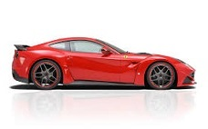
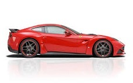
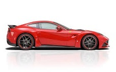
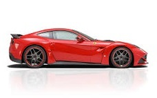

spacespace
spacespace
There are millions of car crazy people like me in the world. Some are even passionate enough to be called Car Enthusiasts.
According to urban dictionary, a car enthusiast is defined as-An individual that loves anything to do with cars and their counterparts, one who can talk for hours about cars and not get tired of it. These people do not hate on others for their vehicle choice and modifications (so called "rice" is irrelevant, that is total shit) but simply encourage creativity and learning.
Now I might not be able to talk about cars for hours but I certainly an fond of them and can't stop my eyes from following a 4-wheeled beauty whenever I see them on the road or in a showroom.
There are hundered of brands out there(Audi, BMW, Ferrari, Mercedes, Lexus, Honda- to name a few), but every individual has their personal favourites.
I have created this website for listing out a few of my favourite brands and cars. I have also included a section about the history of cars and my wish-list too.
Check out the images below to see them. Also, do not forget to look at my wishlist. You will see some really awesome cars out there. You never know, they might make it to your wish list too.
It does not hurt to know about how it all began.Let us read the history of cars.
Who does not know about Ferrari !! These beauties go from 0 to 60 in the blink of an eye. The color generally associated with Ferrari's is Red.
The first name that comes to mind when you think about Luxury-cars is Mercedes. The company, however, manufactures many pretty-bad boys too.